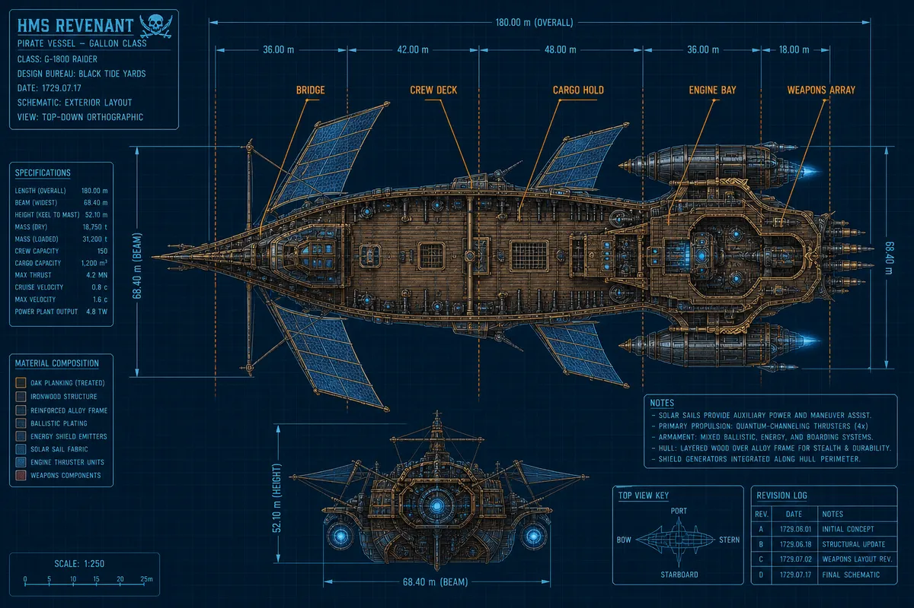
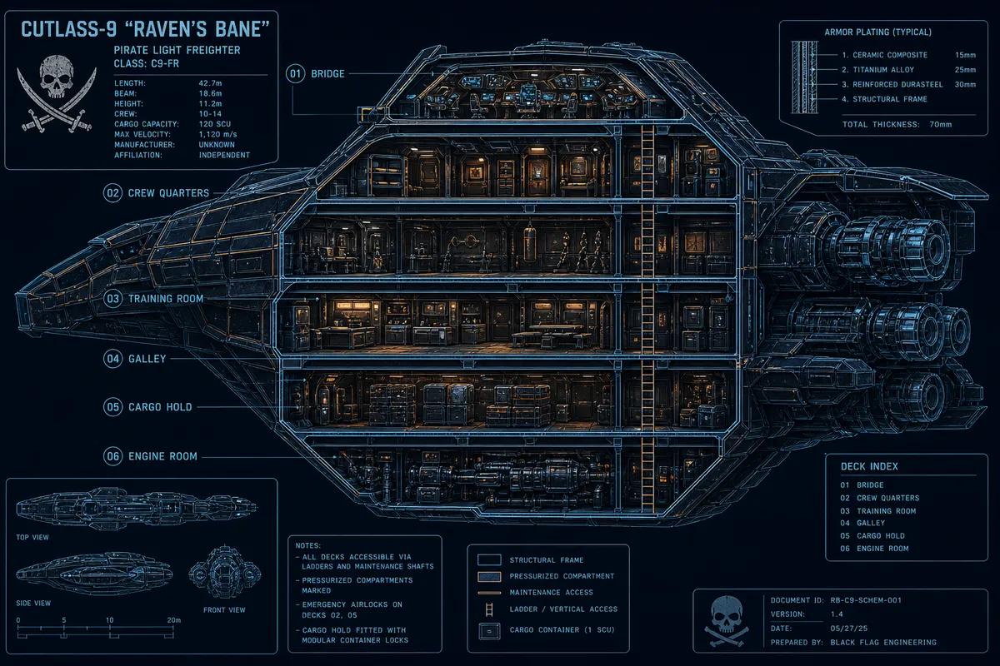
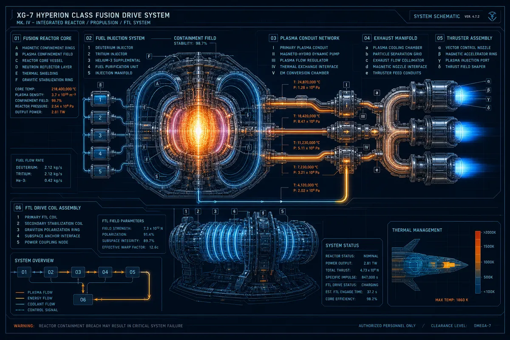
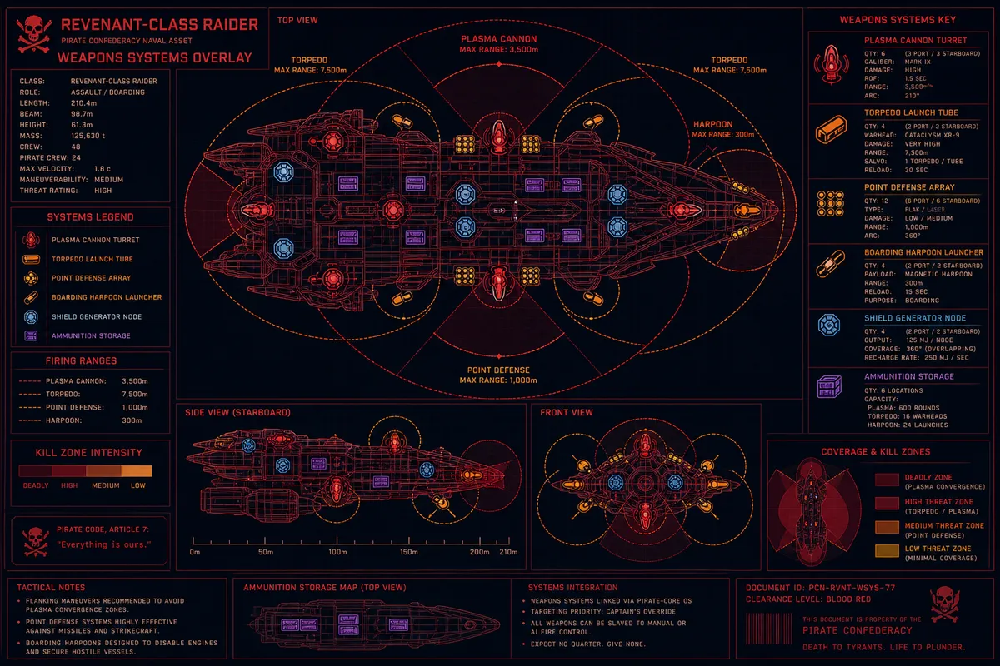
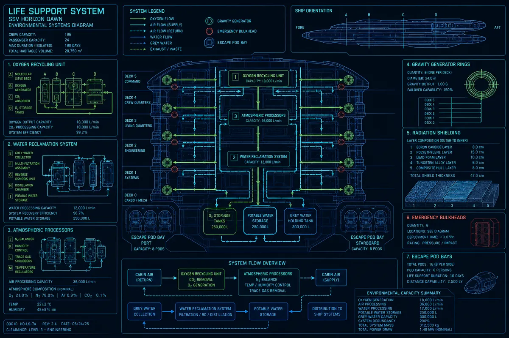
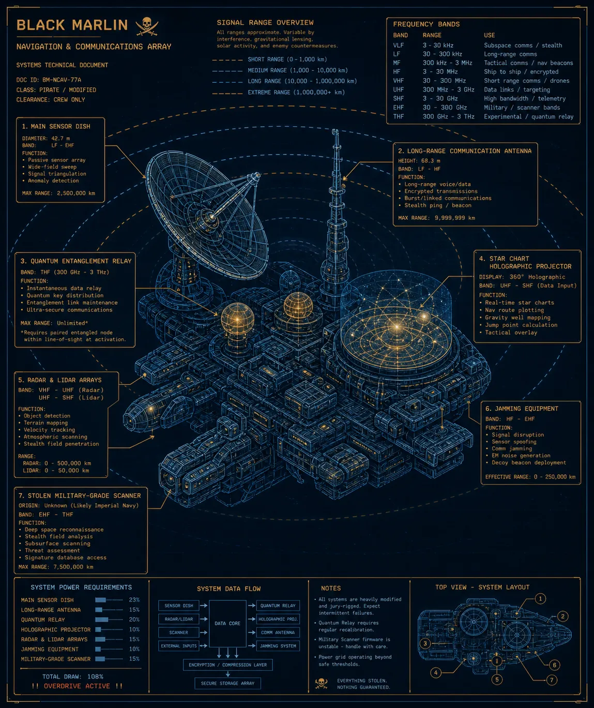

Technical Specifications — Revision 17.4
Last updated: Stardate 4291.7 — Chief Engineer McTavish

| Classification | Modified Galleon-class Heavy Frigate |
| Length Overall | 247.3 meters |
| Beam | 58.1 meters |
| Draft | 41.7 meters (keel to mast tip) |
| Displacement | 18,400 metric tonnes (unladen) |
| Hull Material | Titanium-carbide frame, salvaged oak plating (decorative + radiation dampening) |
| Armor Rating | Class IV — withstands standard naval plasma fire for 4.7 minutes |
| Decks | 7 (Bridge / Crew / Officers / Training / Cargo / Engineering / Maintenance) |
| Bulkheads | 23 emergency pressure doors (4 jammed, 2 welded shut — do not ask) |
| Masts | 3 solar sail masts — retractable, 120m deployed span |
| Solar Sails | Graphene-weave, gold-leaf finish — functional + intimidating |
| Paint | Black. Repainted every 200 days. Non-negotiable. |


| Primary Drive | Twin Mk-VII Fusion Reactor (stolen from INS Retribution) |
| Reactor Output | 4.2 terawatts (nominal) / 5.8 TW (redline — not recommended) |
| Containment Field | 87% stability — "acceptable" |
| Fuel | Deuterium-Tritium pellets (capacity: 2,400 tonnes) |
| Range (Sublight) | 14 months continuous burn |
| Maximum Sublight | 0.4c (0.47c with sails deployed — structural risk) |
| FTL Drive | Salvaged Kren'thari Phase-Shift Unit — origin unknown |
| FTL Range | ~800 light-years per jump (cooldown: 4.7 hours) |
| FTL Side Effects | Mild nausea, temporal disorientation, speaking in Latin (Jenkins only) |
| Thrusters | 12 maneuvering thrusters (plasma), 4 emergency retro-burn |
| Solar Sails | Auxiliary propulsion — 0.01c max, silent running capable |
| Emergency Power | 6 backup fuel cells — 72 hours life support only |

| Primary Armament | 8 × Mk-IV Plasma Cannons (broadside, 4 port / 4 starboard) |
| Cannon Range | 12,000 km effective / 18,000 km maximum |
| Cannon Reload | 4.2 seconds per volley |
| Forward Battery | 2 × Heavy Rail Guns ("Long Tom" and "Short Temper") |
| Rail Gun Range | 45,000 km — kinetic kill, no energy signature |
| Torpedo Tubes | 4 × forward, 2 × aft — capacity 36 torpedoes |
| Current Torpedo Stock | 17 (resupply overdue) |
| Point Defense | 16 × auto-tracking PDC turrets — meteorite + missile intercept |
| Boarding Equipment | 4 × magnetic harpoon launchers, 2 × breaching pods (6 crew each) |
| Shield Generator | Modified merchant-class — covers 60% of hull at full power |
| Shield Duration | 11 minutes sustained fire / 3 minutes under heavy bombardment |
| Concealed Weapons | Classified |

| Atmosphere | Nitrogen-Oxygen mix (78/21) — recycled every 4 hours |
| Oxygen Generation | Dual electrolysis units + algae farm (Deck 3, Section 4) |
| CO₂ Scrubbing | Lithium hydroxide canisters — capacity 74 crew / 90 days |
| Water Reclamation | Closed-loop — 97.3% recovery rate |
| Water Reserve | 240,000 liters (6 months at full crew) |
| Gravity | Centrifugal rings Decks 1-5 — 0.92G standard / Deck 6-7: 0.6G |
| Zero-G Zones | Training Chamber (Deck 4) + Maintenance Shaft 7 |
| Temperature | 18°C standard / 22°C officer quarters / 14°C cargo hold |
| Radiation Shielding | Composite hull + water jacket (port side compromised — patched) |
| Escape Pods | 8 × 6-person pods (48 capacity) — untested |
| Medical Bay | 1 × surgical suite, 1 × med-pod (auto), 4 trauma beds |
| Galley Capacity | Feeds 74 crew, 3 meals/day — quality not guaranteed |

| Main Sensor Array | Phased-array radar/lidar — 200,000 km detection range |
| Long-Range Scan | Passive — 2 light-year range (stellar objects only) |
| Military Scanner | Stolen INS unit — IFF interrogation, 80,000 km active scan |
| Star Charts | Holographic + paper backup (Silver insists on both) |
| Chart Coverage | 14,000 systems mapped — 3,200 with safe harbor annotations |
| Communications | Quantum-entangled relay (1 paired unit — location classified) |
| Standard Comms | Subspace radio — 50 light-year range, 4-hour delay at max |
| Jamming Suite | Broadband EM jammer — 5,000 km effective radius |
| IFF Transponder | 6 × forged identities loaded — rotated per sector |
| Distress Beacon | Installed. Disabled. Silver's orders. |
| Navigation Computer | Dual-core with manual override — "The ship goes where I point it." |
| Autopilot | Functional. Trusted by no one. |
| Rank | Name | Station | Status |
|---|---|---|---|
| Captain | Long John Silver | Bridge / Cabin | ACTIVE |
| First Mate | Israel Hands | Bridge — Helm | ACTIVE |
| Chief Engineer | McTavish | Engine Room | ACTIVE |
| Ship's Cook | Silver (concurrent) | Galley | ACTIVE |
| Surgeon | Dr. Livesey | Medical Bay | RESTRICTED |
| Navigator | Ben Gunn | Navigation School | ACTIVE |
| Gunner Chief | Job Anderson | Weapons Deck | ACTIVE |
| Cabin Boy | Jim Hawkins | Everywhere | CLASSIFIED |
| Bosun | O'Brien | Cargo Hold | ACTIVE |
| Lookout | Captain Flint (parrot) | Silver's shoulder | ACTIVE |